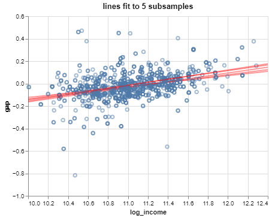

statistical models are probabilistic represenations of data generating processes
some randomness must be present (usually from sampling) for this to be sensible
regression models relate a variable of interest to one or more other ‘explanatory’ variables and consist of:
a distribution for the variable of interest
expression(s) for the distribution’s parameters in terms of the explanatory variable(s)
for linear regression, the mean of the response is a linear function of the explanatory variable(s)
‘simple’ if one explanatory variable
‘multiple’ if many explanatory variables
‘multivariate’ if many variables of interest
From last time
A simple linear model is \(y_i = a x_i + b + e_i\) where \(e_i\) are ‘residuals’ – leftover quantities.
The least squares line minimizes the sum of squared residuals \(\sum_i e_i^2\) – i.e., the residual variance, assuming the line passes through the mean.
\[
\begin{align*}
b &= \frac{S_x}{S_y} \text{corr}(x, y) \\
a &= \bar{y} - b\bar{x}
\end{align*}
\]
Visualizing the line
Verifying that the line plotted on a prediction grid (left) matches the regression transform from Altair (right):
Not a statistical model, yet
The least squares line is simply an algebraic transformation of the data – technically, a projection.
This is not yet a statistical model according to our definition, since there is no probability distribution involved.
We can change that by considering the residuals to be random.
Residual distribution
Have a look at the histogram of the residuals (with a KDE curve):
Does this look like any probability density function you encountered in 120A?
Residual distribution
The residual distribution is pretty well-approximated by the normal or Gaussian distribution:
The error model
This phenomenon – nearly normal residuals – is pretty common in practice.
So a standard distributional model for the residuals is that they are independent normal random variables. This is written as:
The intercept \(\beta_0\) represents the mean response \(\mathbb{E}y_i\) when \(x_i = 0\).
In the SEDA example:
For districts with a log median income of 0, the mean achievement gap between boys and girls is estimated to be -1.356 standard deviations from the national average.
Not incorrect, but awkward:
log median income is not a natural quantity
the sign is confusing
Parameter interpretations: intercept
Better:
For school districts with a median income of 1 dollar, the mean achievement gap is estimated to favor girls by 1.356 standard deviations from the national average.
Check your understanding:
why 1 dollar and not 0 dollars?
why not -1.356?
Not of particular interest here because no districts have a median income of 1 USD.
Parameter interpretations: slope
The slope \(\beta_1\) represents the change in mean response \(\mathbb{E}y_i\) per unit change in \(x_i\).
In the SEDA example:
Each increase of log median income by 1 is associated with an estimated increase in mean achievement gap of 0.121 standard deviations from the national average in favor of boys.
Not incorrect, but a bit awkward – how much is a change in log median income of 1 unit?
Parameter interpretations: slope
Better:
Every doubling of median income is associated with an estimated increase in the mean achievement gap of 0.084 standard deviations from the national average in favor of boys.
Why doubling??
Hint:\(\hat{\beta}_1\log (2x) = \hat{\beta}_1\log x + \hat{\beta}_1 \log 2\)
Parameter interpretations: error variance
The error variance \(\sigma^2\) represents the variability in the response \(y\) after accounting for the explanatory variable \(x\).
In the SEDA example:
After adjusting for log median income, the gender achievement gap varies among districts by an estimated 0.11 standard deviations from the national average.
Note that \(\hat{\sigma}\) is reported for interpretation on the original scale, rather than \(\hat{\sigma}^2\).
Parameter interpretations: error variance
Compare the estimated ‘raw’ variance in gender gap with the estimated residual variance after accounting for log median income:
interpreted as the proportion of variation in the response explained by the model
General parameter interpretations
There is some general language for interpreting the parameter estimates:
(Intercept) When [\(x_i = 0\)] the mean [response variable] is estimated to be [\(\hat{\beta}_0\) units].
(Slope) Every [one-unit increase in \(x_i\)] is associated with an estimated change in mean [response variable] of [\(\hat{\beta}_1\) units].
(Error variance) After adjusting for [explanatory variable], the remaining variability in [response variable] is an estimated [\(\hat{\sigma}\) units] about the mean.
You can use this standard language as a formulaic template for interpreting estimated parameters.
Centering the explanatory variable
If we want the intercept to be meaningful, we could center the explanatory variable and instead fit:
We could seek to adjust the model so that the intercept is interpreted as the gap at the district with the smallest median income:
\[
y_i = \beta_0 + \beta_1 \log\left(x_i - x_{(1)} + 1 \right), \quad x_i: \text{median income for district } i
\]
But this changes the meaning of the other model terms:
\(\beta_1\) represents the change in mean gap associated with multiplicative changes in the amount by which a district’s median income exceeds that of the poorest district
\(\sigma^2\) is the variability of the gap after adjusting for the log of the difference in median income from the median income of the poorest district
Other transformations
Unsurprisingly, estimates are not invariant under arbitrary transformations, so if the meanings of the other parameters change, then so do the estimates:
# center log median incomeincome = np.exp(regdata.log_income) income_shifted = income - income.min()log_income_shifted = np.log(income_shifted +1)# form x matrixx_shifted = sm.tools.add_constant(log_income_shifted)# refit modelslr_shifted = sm.OLS(endog = y, exog = x_shifted)beta_hat_shifted = slr_shifted.fit().params# display parameter estimatesprint('coefficient estimates: ', beta_hat_shifted)print('error variance estimate: ', slr_shifted.fit().scale)
Note also it’s not possible to express the old parameters as functions of the new parameters; this is a fundamentally different model.
Uncertainty quantification
A great benefit of the simple linear regression model relative to a best-fit line is that the error variance estimate allows for uncertainty quantification.
What that means is that one can describe precisely:
variation in the estimates (i.e., estimated model reliability);
variation in predictions made using the estimated model (i.e., predictive reliability).
Understanding variation in estimates
What would happen to the estimates if they were computed from a different sample?
We can explore this idea a little by calculating least squares estimates from several distinct subsamples of the dataset.

The lines are pretty similar, but they change a bit from subsample to subsample.
Variance of least squares
How much should one expect the estimates to change depending on the data they are fit to?
It can be shown that the variances and covariance of the estimates are:
Bear in mind that the randomness comes from the \(\epsilon_i\) model term.
these quantify how much the parameters vary across collections of \(y_i\)’s measured at exactly the same values of \(x_i\)
these are not variances of the parameters; \(\beta_0\) and \(\beta_1\) are constants, i.e., not random
they are also not variances of the estimates – e.g.,\(0.121\) is yet another constant
Standard errors
So the variances can be estimated by plugging in \(\color{red}{\hat{\sigma}^2}\) for \(\sigma\) in the variance-covariance matrix from the previous slide.
The estimated standard deviations are known as standard errors: